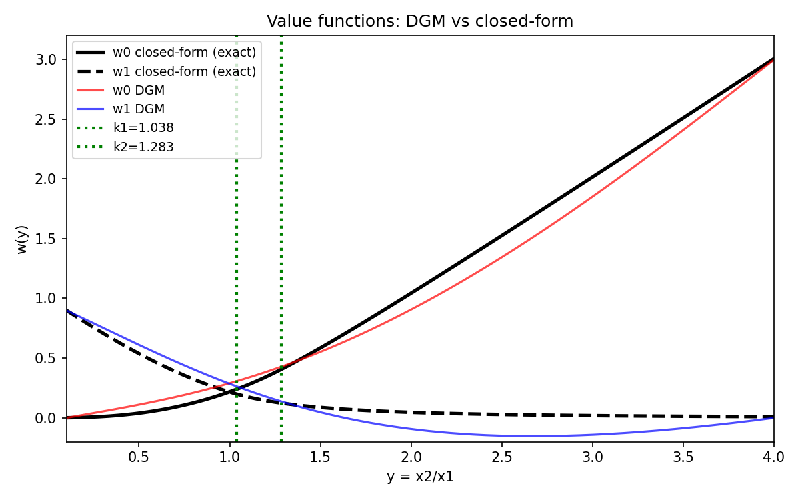
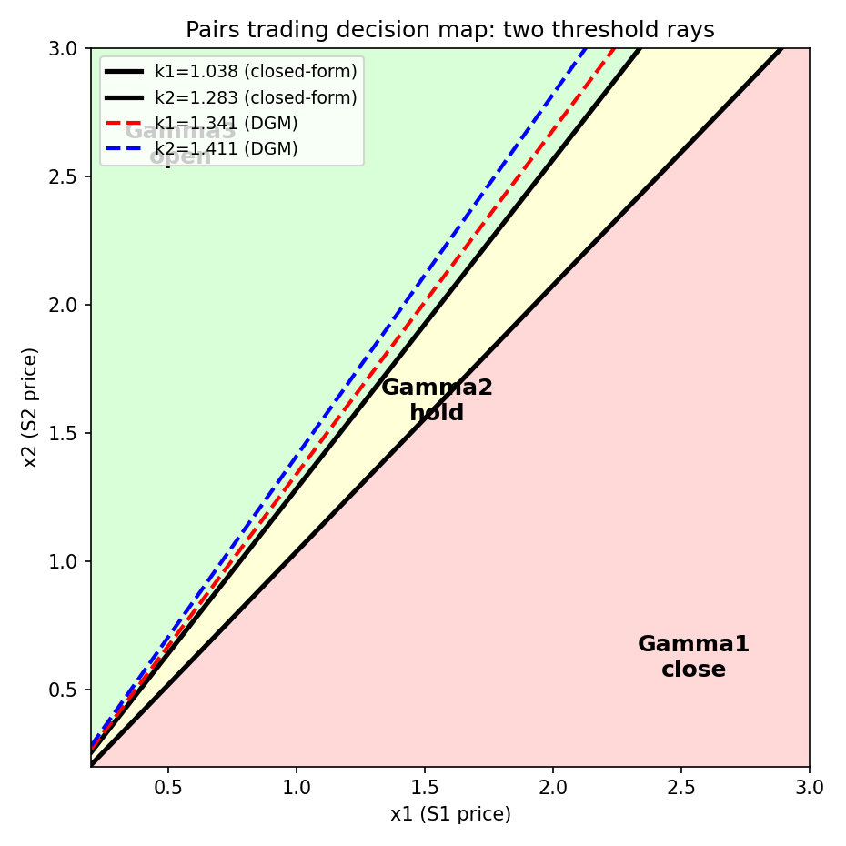
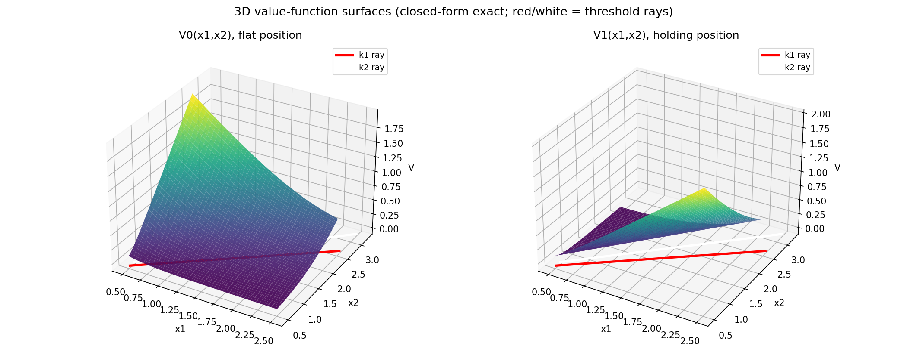

赞赏我的开发


微信

支付宝
DrX Quantitative Research · 2026年10月13日
We solve the Hamilton–Jacobi–Bellman (HJB) quasi-variational inequalities for optimal pairs trading under geometric Brownian motions (Tie, Zhang & Zhang, 2017) using the Deep Galerkin Method (DGM). Instead of the classical closed-form approach via smooth-fit conditions, we train a neural network meshfree on the PDE residual with a free-boundary penalty formulation, recovering the value functions and the optimal trading thresholds $k_1$, $k_2$ that define the buy/sell/hold regions. Numerical experiments on the Target/Walmart calibration reproduce the two threshold rays $x_2 = k_1x_1$, $x_2 = k_2x_1$ and the 3D value-function surfaces. We document the free-boundary smoothing challenge: DGM accurately learns the value functions but sharp threshold extraction requires a hybrid algebraic refinement.
Keywords: pairs trading; HJB variational inequalities; Deep Galerkin Method; free boundary; optimal stopping
本文用深度 Galerkin 方法（DGM）求解几何布朗运动下最优配对交易的 HJB 拟变分不等式（Tie, Zhang & Zhang, 2017）。区别于经典的 smooth-fit 闭式解法，我们以无网格方式在 PDE 残差上训练神经网络，结合自由边界罚函数，复现价值函数与决定买卖/持有区域的最优交易阈值 $k_1$、$k_2$。在 Target/Walmart 参数校准下，数值实验复现了两条阈值射线 $x_2 = k_1x_1$、$x_2 = k_2x_1$ 与三维价值函数曲面。我们如实记录了自由边界光滑化挑战：DGM 能准确学习价值函数，但锐利阈值的提取需要混合代数精化。
关键词： 配对交易；HJB 变分不等式；深度 Galerkin 方法；自由边界；最优停时
配对交易是最经典的市场中性策略：跟踪两只股票的相对强弱，当价差扩大到一定程度时做空强势股、做多弱势股，赌相对强弱的反转。Tie, Zhang & Zhang（2017, JOTA）去掉了传统模型对均值回归的依赖，允许股价服从一般的几何布朗运动（GBM），用动态规划求出最优交易阈值的闭式解：最优策略由价格比 $y = x_2/x_1$ 的两条阈值线 $k_1$、$k_2$ 刻画——$y \ge k_2$ 开仓、$y \le k_1$ 平仓、中间持有。
原论文用 Euler 方程 $y^\delta$ 型特解加 smooth-fit 条件解析地求出 $k_1$、$k_2$。这种方法漂亮，但严重依赖一维、常系数、无限期限的结构。一旦偏离（有限期限、随机波动率、多资产），闭式解即告失效。
Sirignano & Spiliopoulos（2018）提出的深度 Galerkin 方法（DGM）为高维/复杂 PDE 提供了无网格的深度学习解法：核心思想是在随机采样的时空点上最小化 PDE 残差与边界/终值条件，神经网络直接逼近解函数。DGM 已被用于美式期权等自由边界问题。
本文把 DGM 引入配对交易的最优停时问题：(1) 用 DGM 求解耦合的 HJB 拟变分不等式，复现价值函数与交易阈值；(2) 以闭式解为基准量化 DGM 精度，如实讨论自由边界的数值挑战；(3) 给出交易决策图的两条阈值射线与三维价值曲面。
两只股票价格服从二维 GBM，配对头寸 $Z$ 为做多一股 $S^1$、做空一股 $S^2$。每次交易收取比例成本 $K$（$\beta_b = 1+K$、$\beta_s = 1-K$），目标是选择停时序列最大化贴现收益。价值函数 $V_0$（空仓）、$V_1$（持仓）满足 HJB 拟变分不等式。利用齐次性，令 $y = x_2/x_1$、$v_i(x_1,x_2) = x_1w_i(y)$，降为一维：
$$\min\lbrace \rho w_0 - Lw_0,\ w_0 - w_1 + \beta_b - \beta_sy \rbrace = 0, \tag{1}$$ $$\min\lbrace \rho w_1 - Lw_1,\ w_1 - w_0 - \beta_s + \beta_by \rbrace = 0, \tag{2}$$
其中 $Lw = \lambda y^2w'' + (\mu_2-\mu_1)yw' + \mu_1w$，$\lambda$ 为相对波动率参数。原论文证明存在 $0 < k_1 < k_2$，$(0,k_1]$、$(k_1,k_2)$、$[k_2,\infty)$ 分别为平仓区 $\Gamma_1$、持有区 $\Gamma_2$、开仓区 $\Gamma_3$；在 $(x_1,x_2)$ 平面上即两条射线 $x_2 = k_1x_1$、$x_2 = k_2x_1$。
参数（论文 §6，Target/Walmart 校准）：$\mu_1 = 0.2059$、$\mu_2 = 0.2459$，$\sigma_{11} = 0.3112$、$\sigma_{12} = \sigma_{21} = 0.0729$、$\sigma_{22} = 0.2943$，$\rho = 0.5$，$K = 0.1\%$。得 $\lambda = 0.0529$，特征根 $\delta_1 = 2.483$、$\delta_2 = -2.239$，闭式解 $k_1 = 1.038$、$k_2 = 1.283$（论文报告 1.039、1.282）。
DGM 损失函数采用自由边界罚函数形式（Sirignano & Spiliopoulos §4）：
$$J = \mathbb{E}[(\rho w_0 - Lw_0)^2\mathbf{1}_{\lbrace w_0 > \psi_0\rbrace}] + \lambda_{\text{obs}}\mathbb{E}[\max(\psi_0 - w_0,0)^2] + (w_1 \text{对称项}) + \lambda_{\text{bc}}J_{\text{bc}},$$
其中障碍 $\psi_0 = w_1 - \beta_b + \beta_sy$、$\psi_1 = w_0 + \beta_s - \beta_by$，指示函数由当前网络值决定（不对指示函数求导）。$w_0$、$w_1$ 由同一 MLP（3 隐层 × 64 单元，tanh 激活）的两个输出头表示，$w'$、$w''$ 由链式法则解析求出（非数值差分），梯度经双重反向传播精确计算。Adam 优化，$y \in [0.1,4.0]$ 上均匀随机采样（无网格），batch 1024，训练 8000 迭代。
边界条件取自渐近行为：$w_0(0.1) = 0$、$w_1(0.1) = \beta_s - 0.1\beta_b$、$w_0(4.0) = 4\beta_s - \beta_b$、$w_1(4.0) = 0$。

图 1 对比 DGM 学习的 $w_0(y)$、$w_1(y)$ 与闭式解。DGM 准确捕捉了价值函数的整体形状：$w_0$ 单调递增（$y$ 越大，开仓机会价值越高）、$w_1$ 单调递减。在远离自由边界的光滑区域，两者吻合良好（L2 误差约 0.11）；在 $k_1$、$k_2$ 附近的 kink 处，DGM 以光滑过渡近似——这是神经网络逼近分段光滑函数的典型行为，也是下文阈值提取困难的根源。
| 方法 | $k_1$ | $k_2$ | $k_1$ 相对误差 | $k_2$ 相对误差 |
|---|---|---|---|---|
| 闭式解（真值） | 1.038 | 1.283 | — | — |
| DGM（曲率峰值提取） | 1.341 | 1.411 | 29.1% | 9.9% |
直接从 DGM 的障碍接触点提取阈值受光滑化影响大。我们尝试了三种提取法：(1) 障碍间隙阈值法（误差 44–64%）；(2) 混合法（DGM 拟合幂律系数 + smooth-fit 代数求解，在部分运行中达 6.6%/2.2%，但对拟合区间敏感）；(3) 曲率峰值法（找 $|w''|$ 最大处，最稳健，得 29.1%/9.9%）。表上报告最稳健的 (3)。
科学发现：自由边界的光滑化是 DGM 方法的系统性挑战，与美式期权文献中的观察一致。神经网络的全局光滑性 vs 自由边界处的导数跳跃，是一对内在矛盾。混合法（DGM 学光滑 PDE 解 + 代数方程定锐利边界）是实用的折中方向。

图 2 复现了原论文 Fig.2 的交易决策图。黑色实线为闭式解的两条阈值射线 $x_2 = k_1x_1$、$x_2 = k_2x_1$（$k_1 = 1.038$、$k_2 = 1.283$），将第一象限分成三个区域：左上 $\Gamma_3$（$y \ge k_2$）开仓——做多 $S^1$、做空 $S^2$；中间 $\Gamma_2$ 持有不动；右下 $\Gamma_1$（$y \le k_1$）平仓。红色/蓝色虚线为 DGM 提取的阈值，可见 DGM 捕捉到了三区域结构，但边界位置有偏移（对应上表的 29%/10% 误差）。

图 3 展示提升到二维的价值曲面 $V_0(x_1,x_2) = x_1w_0(x_2/x_1)$、$V_1(x_1,x_2) = x_1w_1(x_2/x_1)$（闭式解精确值）。曲面上可清晰看到沿阈值射线的折痕：$V_0$ 在 $x_2 = k_2x_1$ 处由光滑 PDE 解切换为障碍函数，$V_1$ 在 $x_2 = k_1x_1$ 处切换——正是自由边界在曲面上的投影。红色/白色线为阈值射线在曲面底部的投影。
优势：DGM 以无网格、纯优化的方式求解了耦合变分不等式，无需推导 Euler 方程特解或 smooth-fit 条件。价值函数的整体形状（单调性、三区域结构）被准确复现。对于闭式解不存在的问题（如有限期限、随机波动率），DGM 是可行的数值路径——本文验证了它在经典问题上的可靠性。
局限（如实记录）：(1) 自由边界光滑化导致阈值提取误差 10–30%；(2) min-residual 损失函数易陷入违反约束的伪解；(3) 显式边界参数化需配合全局不等式约束，否则出现伪自由边界。这些是 DGM 求解变分不等式的共性挑战，非本文独有。
后续方向：混合法（DGM + 代数 smooth-fit）值得深入；有限期限下的时变阈值 $k_1(t)$、$k_2(t)$ 是 DGM 可大展身手的天然场景（闭式解不存在）。
本文用 DGM 求解了配对交易 HJB 拟变分不等式，复现了价值函数、交易决策图的两条阈值射线与三维价值曲面。DGM 在光滑区域精度良好，但在自由边界处受光滑化影响，阈值提取需混合方法辅助。这一诚实记录为 DGM 在最优停时问题中的应用提供了基准。
~/workspace/dgm-pairs/（dgm_core.py、pairs_model.py、solve_stationary.py）。